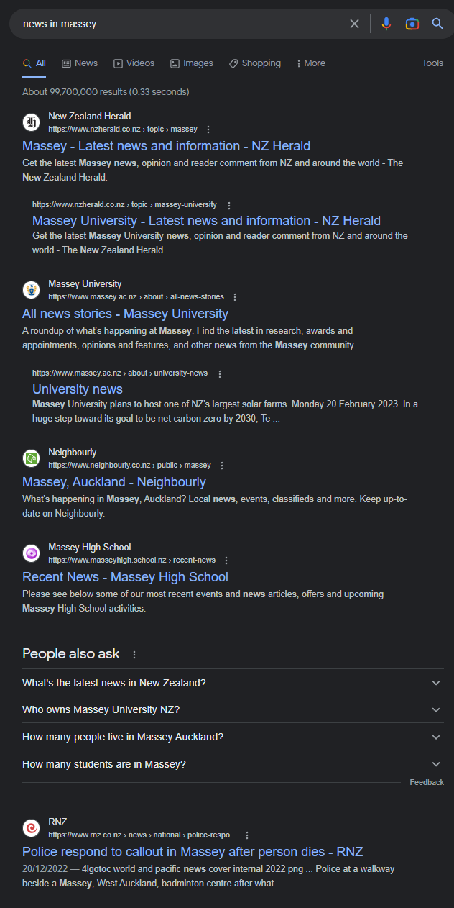

+8-=-=-=-=-=-8+ | ,.-'"'-., | |/ \| |\:. .:/| | \:::::::/ | | \:::::/ | | \:::/ | | ):( | | / . \ | | / . \ | | / . \ | |/ .:. \| |\.:::::::./| | '--___--' | +8-=-=-=-=-=-8+
Empathy Research
Crime and General bad behavior in the area:
First I decided to look at the news and see the extent of crime that happen in the area. Maybe look at google maps to also see what comes ups. Such as run down buildings, poorly maintained areas and such.
First off Royal heights:
Royal heights is a small shopping area with the bare essentials like a bakery, supermarket, laundromat, dollar store, etc etc.
At first glance when looking at this supermarket the exterior of the building it looks very old not maintained very well leaving to how it is now. When walking up to the supermarket entrance you see a lot of photos of people. Upon taking a closer look at it, its photos of people who have stolen from the supermarket and seemingly being publicly shamed for their actions and to try and get justice.
Despite the previous supermarket not doing this it does give me a sense of security of not seeing the people who committed the crime and by having the pictures there made me feel that this place was more unsafe then i actually is.
Things also don’t change much when it comes to the inside of the super market. When entering, i got meet with lots of boxes in the entrance. Although items were placed in their separate item shelves there’s also plenty of items on their own on standoffs.
Outside of the supermarket theres also shops in a similar start of a bit old and run down there also some properties that are unoccupied. Im assuming it maybe because its not worth it to open a shop here due it it not being profitable because people might not have the money to spend on things.
When looking at the stores here, ive noticed that there are only what I personally call skeleton stores. A Pharmacy, bakery, takeaway, post office, etc. It seems like that there are only the bare essentials for what constitutes as a small shopping center nothing more, nothing less.
What may have caused this?
Well living in Massey comes with is not so great things ofc, the crime is what i assume is why massey is they way it is. Because crime is often hard for a student to document lets begin with looking at the news. When searching up news in Massey The first thing that comes us is a Massey section in the NZ herald and then 1 or 2 articles from other news sources in the main search directory.
When looking through the NZ Herald articles the main thing that i noticed was that the majority of articles was about crime.
When looking at this its rather daunting to see that its only crime mentioned and hardly anything else. For me this does paint a dark picture on and in the area.
Even looking at past news its mainly if not only about crime that happened in Massey. Its hard to say that this is a decently safe area for people to live.
Second Westgate shopping center:
Westgate shopping center is a pretty much an open mall with shops surrounding a central carpark. This give people a great place to walk to get the things you need. Overall the place is pretty nice and well maintained. Though there is a weird public toilet in the middle of the car park.
This is a public toilet that costs 50cents to enter. I don’t know why but I assume its because the public toilets get ruined by people so they had to charge people to enter.
In saying this, Westgate is a place technically outside of Massey and mainly consists of big brands and high end wares so I would expect the place to be much better.
Stakeholders in this situation:
I think the main stakeholder for this area would be:
- The police that have to deal with the trouble makers
- The people who commit the trouble
- Community workers that want to make the place better
- Elderly that lives in the area
- Small children and families